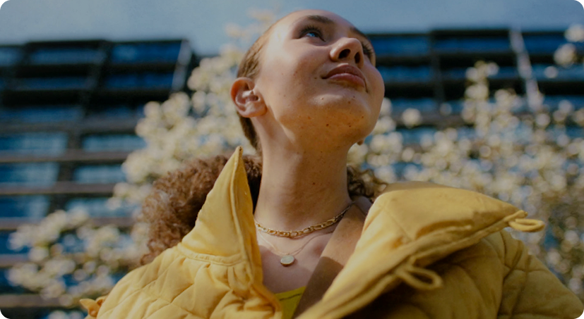

O logo pode ser reproduzido sobre fundos de cores diferentes, desde que observado o contraste de leitura. Damos preferência às cores institucionais e, sobre grafismos e fotografias, busque áreas de baixa complexidade visual.
